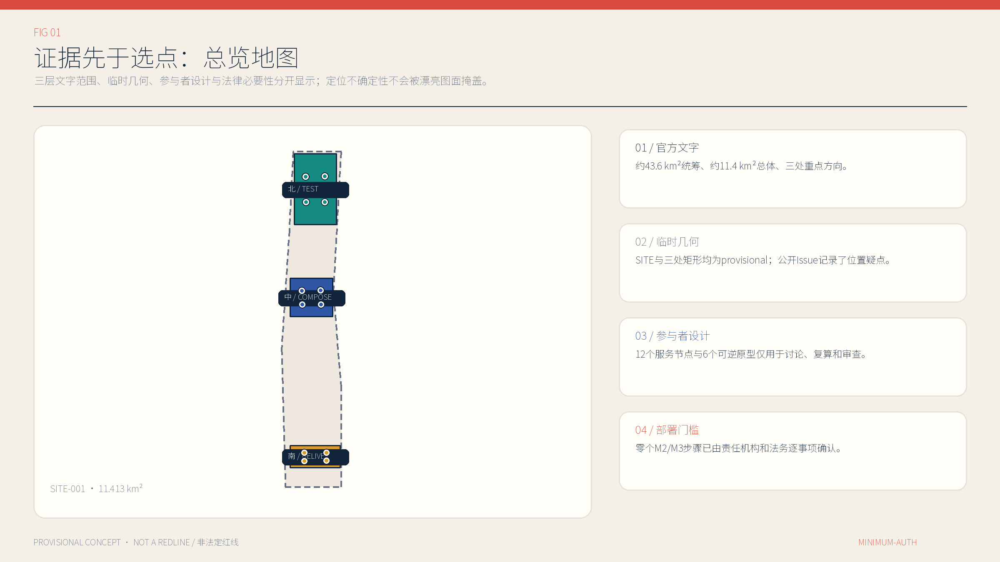
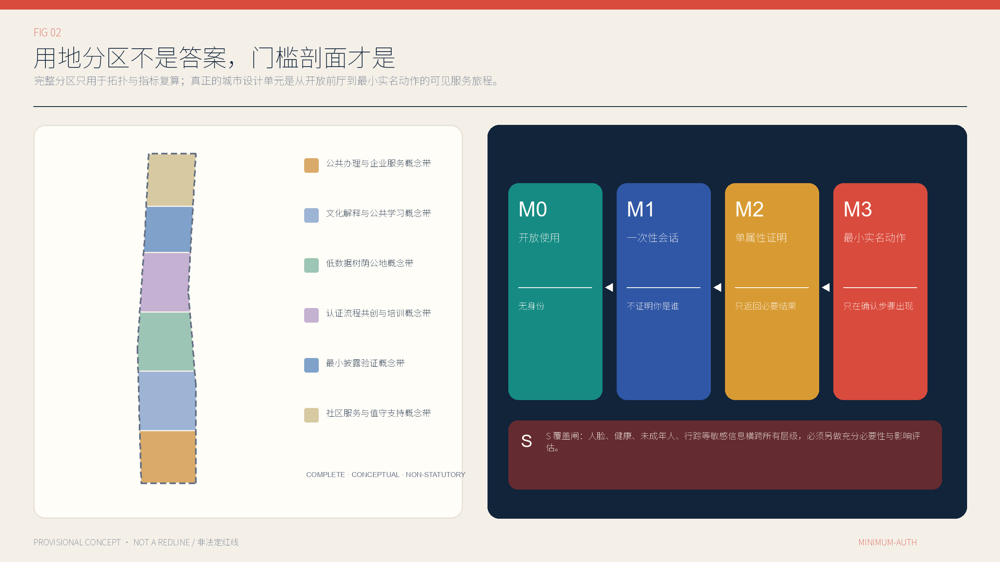
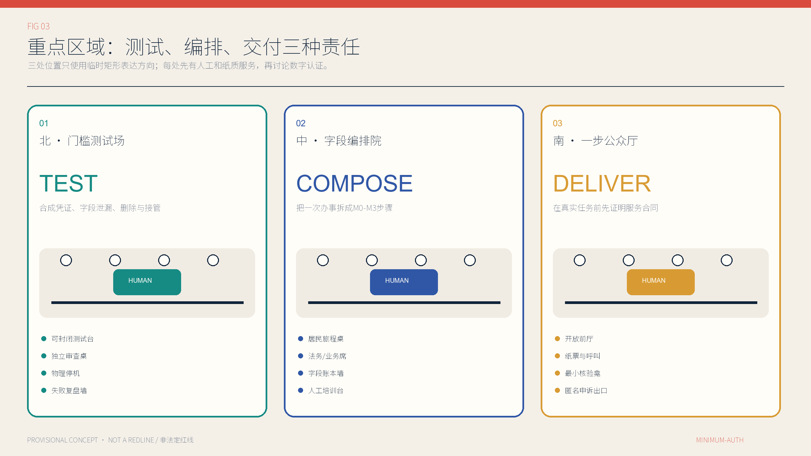
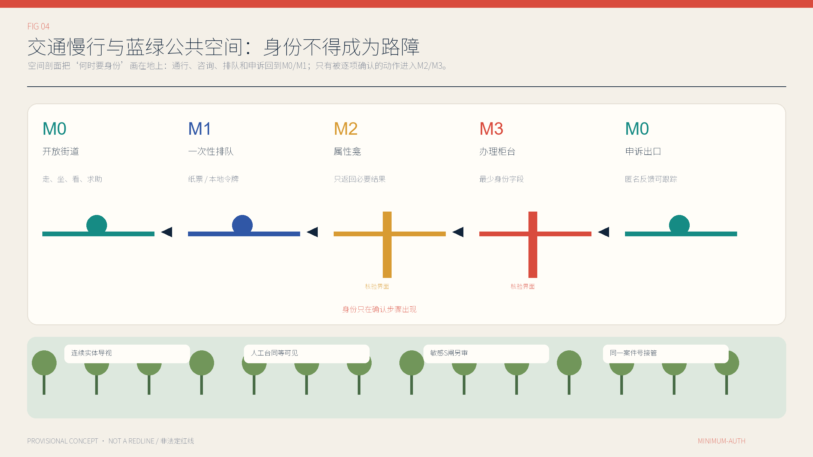
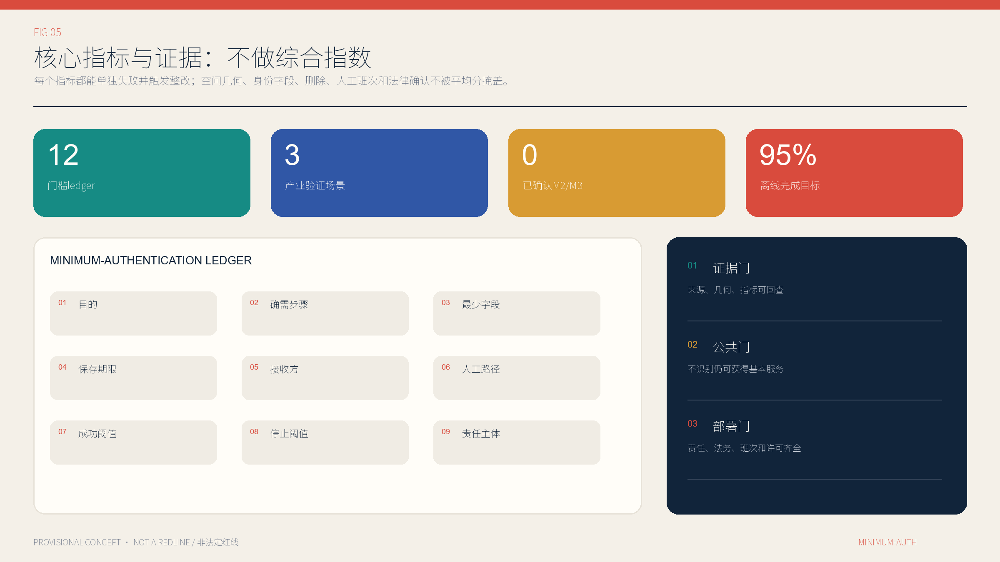

京张最小认证 / MINIMUM-AUTH JINGZHANG：身份只在必要的一步出现
把公共服务中的身份门槛拆到精确办理步骤：默认匿名或一次性会话，仅在责任机构逐事项确认后使用最小属性或最小实名，并以人工、纸质和机械路径保证退出。
京张最小认证 / MINIMUM-AUTH JINGZHANG：身份只在必要的一步出现
本方案不再把“没有 App 也能用”当作完整创新，因为公开投稿中已经有更系统的同类命题。它只追问一件更窄、也更可执行的事：完成一项公共服务时，到底在哪一个具体动作才确有理由知道使用者是谁？ 默认答案是“不需要”；如果确需提高门槛，责任机构必须公开目的、精确步骤、最少字段、保存期限、接收方、人工入口、成功阈值、停止阈值和问责人。认证完成后，后续无关步骤立即退回低门槛，不能借一次核验形成跨服务画像。
设计依据与资料清单
方案依据分为三层。第一层是可核验事实：征集公告用文字给出约 43.6 平方公里统筹研究范围、约 11.4 平方公里总体设计范围，以及众智园、北京 AI 原点社区、大钟寺三处共约 368.4 公顷重点区域；这些数字描述任务尺度，不等于本包内 polygon 的测绘精度。第二层是仓库提供的机器可读资料：brief/site-package/、来源登记、任务矩阵和 provisional geometry。第三层才是本方案生成的设计推导、指标和场景。三层不得互相冒充。来源 来源
空间证据尤其需要克制。仓库维护者已把 site_boundary.geojson 和三处 key_areas.geojson 标为临时约束；公开 Issue 还指出总体 polygon 与遗址公园、南部重点区与“大钟寺”地名之间存在定位疑点。因此，本包保留原 provisional 几何，只用于拓扑、面积复算和设计关系演示；图中的北、中、南是概念角色，不是站口、地块、道路红线或选址结论。取得官方或已清权 CAD/GIS 后，全部面积、线长、分区、节点和图纸必须同源重算。来源 空间数据
法律依据也只支持约束，不直接给出现成设计答案。《个人信息保护法》提供目的明确、直接相关、影响最小、最短必要保存等原则；人脸识别办法要求在同等目的可用非人脸方式时不得把人脸作为唯一验证方式；国家网络身份认证办法支持保留其他合法核验方式及只返回核验结果。现行法律没有“M0—M3”这张等级表，所以它是本方案的设计推导，而不是法定分类。来源 来源 来源
原创性核验同样属于资料清单。公开 PR #1028 已提出 NO-APP、无账号、无手机、人脸非必需与人工接管；Choice Line 已提出服务双轨和选择等价；Common Eaves 已提出 AI 关闭时仍工作的公共空间。本方案不复制这些主轴、文字或图形，而把设计单元收窄为“单个 transaction step 的身份必要性”和字段级账本。来源 来源 来源

三层范围工作框架
统筹研究范围回答制度与生态问题：AI 产业链如何在不把居民变成默认数据源的前提下形成可信公共场景；总体设计范围回答空间与运营问题：怎样把开放入口、一次性会话、属性证明、最小实名、人工复核和申诉出口组织成一条可读的服务网络；三处重点区域回答验证问题：能否用可逆、小尺度、有人值守的原型证明字段确实最少、替代路径确实可用、停止后公共服务仍继续。三层以同一个 minimum-auth ledger 为接口，不靠另造一条“智慧走廊”口号连接。来源 深度
| 工作层级 | 本方案的问题 | 本次交付 | 明确不做的外推 |
|---|---|---|---|
| 43.6 km² 统筹研究 | 谁在什么情况下有权要求身份 | M0—M3+S 协议、责任角色、产业验证任务 | 不宣称全域已接入统一身份设施 |
| 11.4 km² 总体设计 | 门槛怎样落到街道、柜台、终端与班次 | 六条概念功能带、开放联系、低数据公地、12 个服务节点 | 不把概念带当法定用地或控规分区 |
| 三处重点区域 | 怎样在受控条件下试、编排、交付 | TEST / COMPOSE / DELIVER 三类界面、六个可逆原型 | 不作站口、地块、权属、工程线位结论 |
工作流从“无身份是否足够”开始，而不是从“采用何种认证技术”开始。一次完整旅程被拆为进入、了解、排队、资格判断、正式动作、结果领取和申诉；每一步分别判断 M0、M1、M2 或 M3，并叠加敏感信息 S 闸。任何一步缺少责任机构、事项依据或替代通道，都不能借上一步身份继续前进。这样，总体策略可以落到柜台标牌、纸票、呼叫按钮、数据字段、删除作业和人员排班，而非停在原则层。空间数据
三层还共享三道门。证据门要求每个结论能回到来源、几何、指标或公开缺口；公共门要求数字模块停用时基础服务仍可获得；部署门要求责任、许可、逐事项法务、数据接收方、人工班次、删除验证和申诉负责人全部到位。前两道可以在公开包内部分检验，第三道目前没有通过，故本方案是可评审的概念协议，不是可直接采购或部署的系统。指标
统筹研究范围产业与未来城市研究
京张 AI 创新生态不只需要模型、算力和企业，更需要一种可供政府、园区、医院、交通、文化机构和供应商共同执行的“最小认证基础设施”。本方案把它定义为公共接口标准，而非统一账号：每个服务仍由自己的责任机构决定业务结果；共享层只帮助描述步骤、生成一次性令牌或返回必要属性，不建设跨部门身份画像库。产业机会因此从“多采数据”转向合成数据测试、隐私工程、属性凭证、无障碍服务、人工接管、删除证明、采购审计和申诉工具。来源
三项产业验证场景全部置于北部 TEST 概念角色，并且只允许使用合成数据。S01 比较“只返回资格是/否”与复制完整证件两种接口，成功条件是业务端永远收不到完整合成证件；S02 演练排队、属性证明和业务办理跨供应商交接，成功条件是未授权字段传输为零且令牌可撤销；S03 用合成案件回放到期删除、人工接管和申诉，成功条件是每个样本都能给出删除证明或合法保留理由。任一测试出现真实个人数据、跨场景固定标识、无法撤销或无人负责，立即停止。空间数据
未来城市研究从八类暂定使用者出发：无智能手机的老人、拒绝人脸的普通居民、使用轮椅或视听辅助的人、临时访客与游客、需要翻译的新市民、尚无完整材料的小微企业经办人、未成年人及监护人、一线柜台和运维人员。这些是招募和共创假设，不是现场画像；本次没有京张实地访谈或代表性样本。下一阶段必须让使用者与一线职工共同评价可发现性、可达性、等待、费用、隐私、尊严和失败恢复，而不能只让技术团队测响应时间。来源
品牌不再命名另一条“智脉、走廊或纽带”，而使用直白的公共承诺：身份只到该到的一步。每个入口展示同一张门槛牌：目的、当前等级、精确认证步骤、所需字段/结果、保存多久、交给谁、是否用于 AI、人工与纸质入口、删除和申诉方式。统一的是公开语言和责任结构，不是集中身份。它既能服务企业验证和采购，也能被居民在现场读懂并据此质疑。来源
总体设计范围城市更新与控规深度城市设计
总体设计采用六条完整拓扑的概念带：公共办理与企业服务、文化解释与公共学习、低数据树荫公地、认证流程共创与培训、最小披露验证、社区服务与值守支持。它们从同一 provisional site 几何切分，目的只是让每平方米都能参加包内复算，避免图示留缝或重叠；编码借用仓库允许枚举，不代表现状、法定用地、产权或控规调整。未来取得法定资料后，应按真实街区、道路和建筑重新布置，而不是保护本稿造出的几何。空间数据
空间核心是一条概念性的南北公共服务步行联系和三条横向联系。沿线设置低数据树荫公地、12 个小型服务节点和六个可拆卸的一至两层原型：最小披露测试亭、供应商交接诊所、字段账本共创室、人工复核与培训厅、一步办理示范厅、匿名申诉与修复室。原型仅表示面积、相邻关系和运营角色，不对应任何现状楼栋，也不提出拆除、保留、加建或新建批准。空间数据 指标
一次办理的空间剖面依次是：M0 开放前厅读取信息与求助；M1 纸票/本地随机令牌维持一次排队；M2 在独立可见的核验界面只取得经确认的属性结果；M3 在声学与视觉隐私更好的柜台完成确需的法定或合同动作；完成后回到 M0 的结果领取和匿名申诉出口。M2、M3 不可藏在入口闸机或默认勾选中，人工办理也不能被放到更远、更短时段或更高费用的位置。来源
所谓“控规深度”在资料不全时应表现为可审查问题清单，而非伪精确数值。建筑高度、容积率、道路红线、退界、停车、消防、市政容量、防洪、文保、权属和投资均保持 unknown；已知的只是参与者概念几何的面积和数量。正式深化必须将这些条件写入每个节点的进入门：资料不齐不选址、许可不齐不施工、班次不齐不采购、M2/M3 法律必要性不明不启用。指标

重点区域详细设计
三处重点区域不承接固化的产业标签，而承担连续的证据角色。北部 TEST：用合成身份、合成资格和合成案件进行接口压力测试，空间由测试亭、供应商交接诊所和可观察的人工回放台组成；禁止真实居民或生产身份进入。中部 COMPOSE：把公共咨询、材料预检、排队、资格判断和正式提交拆成可见步骤，由字段账本共创室和人工复核培训厅让业务人员、法务、使用者逐项删减门槛。南部 DELIVER：在一步办理示范厅与匿名申诉修复室比较数字、纸质和人工路径，并公开等待、完成、删除与投诉结果。空间数据
北部重点区的成功不是“接入多少模型”，而是三项验证能否在不触碰真实个人数据时暴露问题。每一次测试预先登记字段、发送方、接收方、有效期、撤销方式、负责人和停止条件；供应商只能看到完成自己步骤所需的数据。若无法导出完整处理记录、证明到期删除或在人工接管后恢复任务，测试不进入下一阶段。设备采用可拆卸家具和本地隔离网络，选址、供电、消防与文保条件均待专业核验。空间数据
中部重点区把“身份何时出现”变成可共同标注的长桌和柜台剖面。八类使用者用纸卡完成旅程，业务责任人指出形成权利义务的精确动作，法务仅对该动作判断必要性，数据人员列出字段与期限，一线职工校验能否在真实班次中执行。争议未解决时，门槛保持 M0/M1；不是先上线再补告知。该区优先容纳 S04—S07：多语言帮助、政务预检、健康导航、现场阅读与外借。空间数据
南部重点区把协议放进日常服务同一界面，容纳青少年工坊、无障碍接驳、公共活动、企业服务与投诉。每项至少有一个不依赖 App 的入口，M2 属性结果与 M3 身份字段分别流向明确接收方，匿名反馈不因缺身份自动降级。三处区域的实际位置都仍为 provisional；尤其不能把当前南部 polygon 说成大钟寺站一体化设计或官方重点区红线。来源

AI 创新生态、人才画像与 AI+ 场景
M0—M3 是步骤门槛而不是人群等级。M0 开放使用：不证明现实身份，适用于通行、一般问询、紧急求助、公开信息和现场阅读。M1 一次性会话：用随机纸票、本地令牌或自愿提供的一次性联系方式维持一次排队、预约或回复，不跨服务关联。M2 单属性证明：只返回年龄段、资格、培训完成等必要结果，不复制完整证件；必须逐事项确认。M3 最小实名动作：仅在具体法定或合同动作确需时识别，且字段不能外溢到前后步骤。所有 M2/M3 当前均为 UNVERIFIED。来源
敏感信息不是更高的“M4”，而是横跨每一级的 S 覆盖闸。匿名健康初筛仍可能处理医疗健康信息，M0 的无障碍偏好也可能因组合而暴露个人状况；人脸、健康、未成年人、金融账户和精确行踪均需另做充分必要性、额外告知/同意适用性、影响评估、访问控制和最短期限。取得同意不能补救本来就不必要的采集，也不能把人脸变成唯一入口。来源
十二项场景不是功能清单，而是十二份最小认证 ledger。S01—S03 为只用合成数据的产业验证；S04 多语言帮助默认 M0、异步回复才到 M1；S05 政务预检 M0、取号 M1、正式提交候选 M3；S06 紧急求助和初筛 M0，正式诊疗/处方/报销候选 M3；S07 现场阅读 M0、外借候选 M2；S08 参观课程 M0、受控设备候选 M2/M3；S09 接驳 M1、优惠资格候选 M2；S10 公共活动 M0、容量预约 M1；S11 企业咨询 M0、跟进 M1、正式申报候选 M3；S12 反馈 M0、跟踪 M1、影响个人权利或退款的救济候选 M3。空间数据
AI 在这些场景中只能做内容检索、翻译、材料提示、路径建议、排队辅助、合成数据测试和可解释的风险提醒。若影响资格、优先级、价格、福利、通行或其他重大权益，必须公开负责主体和主要依据，允许说明、异议和人工决定；模型不能既作初判又作唯一复核。原始咨询、健康描述、投诉材料和未成年人资料不得因“改进模型”自动进入训练集。来源
所需人才不仅是算法工程师，还包括业务负责人、隐私与安全工程师、无障碍专家、服务设计师、法务、一线柜台、运维、申诉负责人、独立评估者和有补偿的使用者代表。每个场景的上线小组必须能回答九个字段：目的、步骤、最少字段、期限、接收方、人工路径、成功阈值、停止阈值、责任人；缺一项就是未准备好，而不是“迭代中”。指标
用地、建筑规模与拆改留方案
land_use.geojson 是六个无缝概念带组成的完整分区，只为验证提案内部拓扑与面积公式。其名称表达办理、学习、低数据公共空间、共创、验证和人工支持的运营功能；代码来自允许枚举，但不能被解释为现状或拟调整的法定用地。每个带的面积由 EPSG:4548 复算，并在替换官方边界时整体失效重算。空间数据 指标
建筑图层只放置六个 1—2 层可逆原型，每个约为小型展亭/工作室尺度：两处服务于 TEST、两处服务于 COMPOSE、两处服务于 DELIVER。floor_area_sqm 由概念基底面积乘拟议层数计算，目的是让图纸、GeoJSON 与指标相互核对，不构成建设规模、容积率、建筑密度或投资承诺。没有现状建筑清单和权属资料，本次不能对任何真实楼栋作拆、改、留分类。空间数据 指标
未来的拆改留决策采用顺序门：先核现状与权属，再核文保与结构安全，再判断运营能否利用现有室内空间，最后才比较可拆卸新增。优先顺序是复用现有有人值守柜台、移动家具和纸质界面，其次是短租或临时适配，最后才是永久工程。任何原型若需要破坏遗存、占用消防疏散、减少公共开放面积或把无障碍路径变成认证通道，应直接淘汰。来源
规模控制不采用“越多越好”。每个重点角色先只配置两个可逆原型和四个服务节点，只有当对应任务的人工/纸质路径达到阈值、字段不超采、删除可证明、申诉能闭环、场地与专业许可齐全时才讨论扩展。若正式资料显示空间不适合，协议可以迁移到既有服务厅或完全撤除；方案价值在门槛合同而不在固定建筑物。指标
交通、轨道、市政与公共服务设施
交通策略从“能否无需识别到达和离开”开始。概念南北联系与三条横向联系表达步行和公共服务的连续关系，不是道路或轨道工程线位。所有开放入口默认 M0，不设置扫码、人脸或账号闸机；导视同时提供高对比文字、触觉/纸质地图、语音或人工问路。普通到访、通行、休息、饮水、厕所和紧急求助不得因没有智能手机而受阻。空间数据
无障碍接驳 S09 用 M1 随机票号维持单次行程，用户可自愿留一次性联系方式；只有申领经确认的优惠资格时才候选 M2，优先只收“符合/不符合”。路边呼叫按钮、人工调度、电话、纸票、现金或实体交通卡与数字入口并列。提案目标是至少 95% 行程无需 App 可预约，人工路径 p90 等待不比 App 路径多 10 分钟；若因无账号或拒绝人脸拒载一次，暂停数字优先派单。指标
轨道站点一体化、停车、非机动车、道路微循环和跨越铁路/河道的可行性必须等待官方线位、站口、红线、客流和工程资料。当前 geometry 只表示“应连接”的关系，不能据此宣称与大钟寺站、清河站或任何出口直接相连。公共交通运营者还需逐项确认实名、票务、安检与优惠资格的规则，本方案不能用个人信息法的一般原则替代行业审查。来源
市政与数字设施遵循最小依赖：基础照明、饮水、厕所、呼叫和门锁保持机械或人工可用；环境传感优先本地聚合，不采设备标识；边缘终端断网后仍能显示静态信息和人工电话。供电、通信、给排水、消防、防洪、垃圾、热环境、网络安全等级和维护预算均未获得现场资料，不能把概念节点包装成已具备承载能力的“智慧基础设施”。空间数据

蓝绿空间、公共空间与城市风貌
低数据树荫公地是一条概念性公共空间带：它把遮荫、休息、步行、导视、饮水、求助和小型服务节点组织在一起，同时明确“空间可用性不得以个人识别为条件”。如需测量热环境、土壤或客流，优先使用不落原始个体数据的本地聚合；任何摄像或身份识别设备都必须另有公共安全必要性、显著提示和严格用途边界，不能以优化体验为由默认追踪。空间数据
公共节点面积占比和绿地占比是从概念几何计算的包内指标，不是生态绩效、绿地率或规划承诺。真实设计必须在官方边界、现状树木、日照、热舒适、雨洪、土壤、管线、海绵城市、无障碍与养护调查后重算。若身份门槛原型挤占树荫、座椅或开放通行，应先缩小或移走原型，而不是把公共空间变成设备展厅。指标 指标
城市风貌采用“可读、可退、可修”的语言：四级门槛用一致颜色和文字，但每张牌都写出本地责任机构；可拆卸构件避免仿古和品牌化大屏；隐私柜台通过距离、视线和声学处理保护个体，却不形成封闭黑箱；夜间保留清晰人工求助与无障碍路径。历史叙事只使用清权史料，不把 AI 生成图当遗产事实，也不在未核实文保对象上固定设备。来源
公共活动 S10 的免费开放部分保持 M0；需要控量时用 M1 随机预约号，并预留至少 30% 匿名现场名额。若确有年龄或安保资格，责任机构才可提出 M2/M3 候选并完成逐事项核验。登录、扫码或人脸一旦成为唯一入口，数字检票暂停，纸票和人工入口继续。这让公共性成为可测试的运营条件，而不是效果图中的空旷广场。空间数据
更新项目清单、实施政策与分期计划
项目清单按证据成熟度而非日历承诺分三阶段。G1“门槛盘点与无永久工程原型”：由业务责任机构列出十二类任务的现状旅程、法律角色、人工班次、字段、供应商和投诉基线，完成场地许可与参与者招募；此时只用纸卡、移动家具和合成数据。G2“三区各一处受控试点”：只有相应 M2/M3 经逐事项确认、人工班次有预算、删除与接管演练通过、无障碍共同验收完成的任务可以进入。G3“按证据扩展或撤回”：只扩大连续达到阈值的任务，其余退回 M0/M1 或关闭数字模块。空间数据
每个项目使用同一份白话实施合同：谁为谁，在什么地点和时段，完成什么任务；现状 baseline 是什么；需要哪些空间、人员、数据、预算和许可；成功与停止阈值是什么；停止时如何保持人工、纸质或机械服务；谁公开结果、处理申诉并承担整改。合同未填写完整，设备不得进场。依赖志愿者长期值守、把人工窗口缩短到难以使用、或用“以后优化”替代删除和申诉责任，均视为没有真实替代路径。来源
建议的首轮不是全域“上线”，而是三项合成数据验证加三项低风险日常任务：多语言公共帮助、匿名反馈、现场阅读/信息。前两项可检验 AI 内容与申诉，后一项检验 M0 公共性；三者都可在不确定场址时先于实体工程完成服务蓝图和纸面演练。健康、未成年人、优惠资格、正式政务和企业申报等涉及敏感或权利义务的任务，不因展示需要提前进入真实数据试点。来源
采购政策要求字段级附件、供应商退出和可验证删除：接口只允许 ledger 已列字段；模型方不得把原始公共咨询用于训练；令牌可撤销且不能跨服务复用；合同终止时导出业务记录、删除供应商副本并由独立人员抽查。绩效付款与任务完成、人工等价、删除、申诉和停机恢复挂钩，不以注册数、采集量或模型调用量作为主指标。来源
指标体系、面积复算与合规矩阵
方案拒绝把权利、空间和技术平均成一个“AI 创新指数”。指标分为五组并分别判定：空间证据检查 provisional site、完整分区、概念建筑、绿地、节点和联系是否同源复算；身份边界检查门槛是否恰好出现在获批步骤、字段是否超采；运营检查人工/纸质路径的可见性、完成率、等待和时段；数据治理检查接收方、删除、撤销、导出和用途；问责检查说明、异议、人工决定与申诉。任何重大项失败都不能被其他高分抵消。指标
| 指标 | 当前值/目标 | 证据状态 | 触发动作 |
|---|---|---|---|
| 已确认 M2/M3 门槛数 | 0 | 已知的包状态，不代表永不需要实名 | 未确认不得部署 |
| 身份在确认步骤前出现 | 目标 0 | 待现场旅程基线 | 超过阈值即暂停相关门槛 |
| 无 App 的合格任务完成率 | 目标 ≥95% | 待实测，非现状成绩 | 连续不达标则回退/增配人工 |
| 公共入口的账号/人脸阻断 | 目标 0 | 待逐入口抽测 | 出现一次立即开放实体通道并停用门禁 |
| 概念分区覆盖/重叠 | 100% / 0 | 可由 GeoJSON 复算 | 不通过则不得使用面积指标 |
| 法定容积率、停车、市政容量 | unknown | 缺官方控规与专业资料 | 保持未知，不由模型填值 |
所有面积与长度在 measurement_crs=EPSG:4548 下从同源 GeoJSON 计算，公式、源文件、置信度、假设与 unknown 原因写入 metrics.json。site_area_sqm 只描述 provisional SITE-001；green_ratio 与 public_space_ratio 只描述参与者概念几何；floor_area_ratio 明确 unknown。替换任一官方几何后必须重新生成全部派生层、指标、PNG、HTML 与 PDF，不能手工改一个数字。指标
compliance_matrix.json 映射任务要求，standard_matrix.json 区分项目依据、法律、技术指南与案例，design_depth_matrix.json 记录现状诊断、三层框架、用地、建筑、交通、蓝绿、实施等深度项。矩阵只证明“哪里有回答”，不证明答案已经被政府、法务、工程师或使用者认可。自检通过也只表示包结构、空间拓扑、指标一致与视觉可读性达到仓库门槛。深度

风险、版权与合规说明
最大风险不是技术失效，而是把设计推导写成既成事实。M0—M3 不是法定身份等级；provisional polygon 不是官方红线；十二项 ledger 的期限是提案上限，不是统一法定期限；海外案例不是中国合规依据；北京市场景开放政策也不是特定京张场地许可。任何真实部署仍需责任机构逐事项确定处理基础、充分必要性、字段、接收方、期限、替代路径、影响评估与行业规则。来源
第二类风险是“退出路径”只存在于文案。纸质不自动无障碍，人工不自动等价，窗口可能更远、更贵、更短时段，职工也可能没有培训与休息。试点必须分别测数字、人工、纸质和机械路径的发现、到达、完成、等待、费用、尊严和失败恢复，并由老人、残障人士、无设备者、语言需求者与一线人员共同验收。数字模块停止时，基础服务不能停止。来源
第三类风险是身份最小化被反欺诈、支付或未成年人保护的泛化理由吞没。本方案不主张所有事务永远匿名；它要求风险控制针对具体动作，并优先采用一次性会话、属性结果、人工复核和可申诉决定。若确需实名，M3 只在该动作发生，身份不得自动解锁其他服务。若涉及人脸、健康、未成年人或行踪，S 闸另行阻断，不能用一次同意包办。来源
文字、表格、M0—M3+S 设计推导、字段 ledger、参与者 GeoJSON、信息图、静态网页与 PDF 版式为本次原创生成；未使用第三方照片、地图瓦片、Logo、同行图件或非公开资料。Noto Sans SC 只以字体子集嵌入 PDF，原字体不随包分发。完整来源、限制与生成分工见 sources.json、report/copyright_statement.md 和 report/narrative.md。来源
本提交采用 CC-BY-4.0：第三方可在适当署名、提供许可链接并标示修改的条件下复制、传播和改编本次原创部分，且不得暗示投稿者或相关机构背书。官方材料、法律文本、网页、provisional geometry 与字体不因本声明被重新许可，继续适用各自权利边界。
参考资料
项目事实以北京市规划自然资源部门发布的资格预审公告为准；开源征集的交付结构、三层任务与 agent 要求以仓库固定版本的 urban-design-ai-submission Skill、任务书和 site package 为准。两者是相关但不同的程序：本包参与 GitHub Agent 开源征集，不宣称具有专业机构竞赛资格、政府背书、补偿权或实施承诺。来源 来源
国内法律与政策一手来源包括：《个人信息保护法》官方全文；2025 年 6 月 1 日施行的人脸识别技术应用安全管理办法；2025 年 7 月 15 日施行的国家网络身份认证公共服务管理办法；《北京市无障碍环境建设条例》；北京市 2026 年场景培育和开放应用工作方案。它们分别支持最小范围、最短期限、敏感信息保护、非人脸替代、保留其他核验方式、结果式核验、传统服务与智能创新并存及受控场景开放；均不直接确认本方案任何地点或 M2/M3 门槛。来源 来源
国际机制案例包括 NIST SP 800-63-4、欧盟数字身份框架、Login.gov 与 RealMe：可借鉴“先问是否需要现实身份”、选择性披露、每服务不同标识、账户与身份核验/业务资格分离以及数字失败后的人工渠道；其法律制度、证件条件、覆盖范围和保存期限不能直接移植。Amsterdam 算法公开实践、Helsinki Testbed 与 UW AccessMap 则启发责任公开、受控试点、停止条件、AI 提取与人工核验、显式不确定性。来源 来源 来源
原创性边界参考三份公开 peer：NO-APP JINGZHANG 处理无设备/无账号/人工接管；Choice Line 处理 AI 与非 AI 路径的真实选择及等价；Common Eaves 处理 AI 关闭时仍可用的公共界面。本方案不重命名这些成果，而交付精确步骤必要性、字段 ledger、门槛空间剖面和责任/停止合同。来源的完整 URL、发布者、用途与不可外推限制均在 sources.json 中登记。来源 来源 来源
最终证据边界如下：公开材料证明征集与法律/案例存在；包内 GeoJSON 和指标证明本方案内部一致；图纸与网页证明设计意图可读；它们都不能证明现场适用、公众接受、法律必要、工程可行或已经获批。真正的下一步不是把 unknown 改成已知，而是由有权数据、专业团队、一线运营者与受影响使用者共同关闭每一项假设。来源